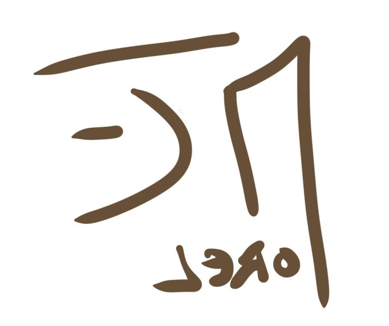

Développeur Web et Web mobile
L'informatique nous entoure, tout au long de notre quotidien, passant d'une simple fonctionnalité de notre réveil à l'intelligence artificielle;
Associant logique et créativité,le métier de développeur web est l'un des métiers
les plus fascinants.
Voici mon histoire "tin-tin"